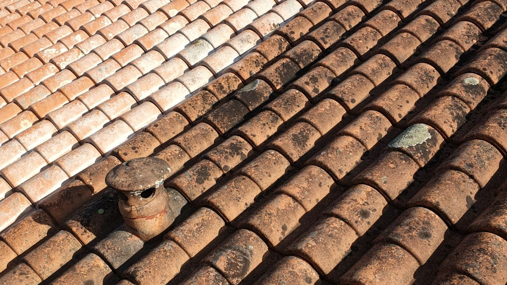
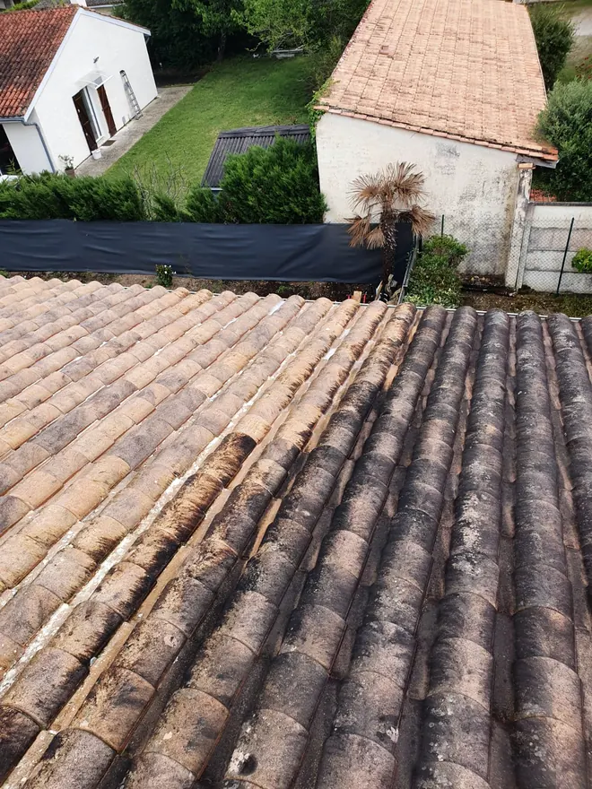
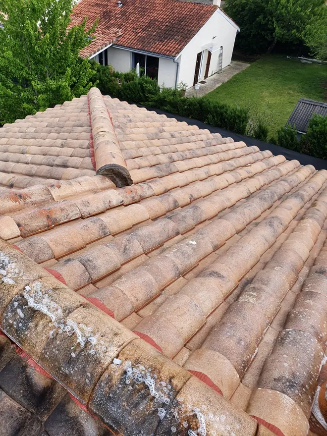
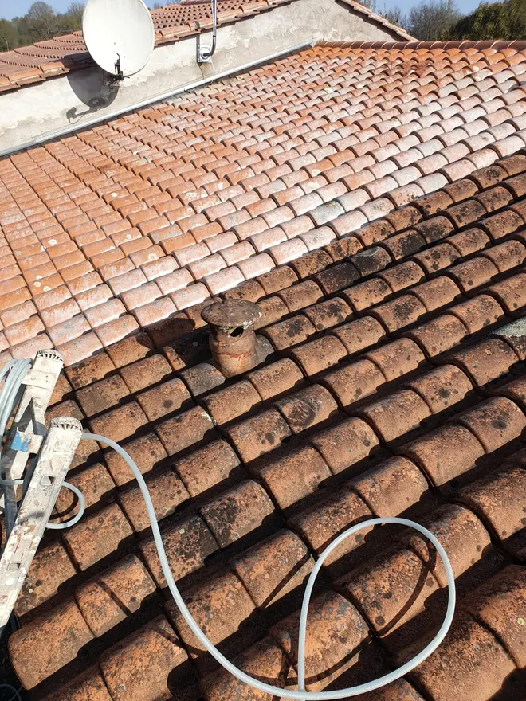

Démoussage · Bordeaux · Gironde
Démoussage de toiture à Bordeaux
Mousses et lichens retiennent l’eau contre la tuile, accélèrent le vieillissement de la couverture et finissent par provoquer des infiltrations. Le démoussage les élimine et rend à la toiture une surface saine.
- Diagnostic sur le toit, pas depuis le sol
- Traitement anti-mousse et hydrofuge
- Déplacement et devis gratuits
- 5,0 sur Google
Nous vous rappelons rapidement.
06 78 44 61 09Appelez directement, nous répondons.
06 78 44 61 09La mousse ne fait pas que salir. Elle abîme.
La mousse retient l’humidité contre la tuile en permanence. Gel, dégel, et la tuile se fissure. Un démoussage coûte une fraction d’une réfection de couverture : c’est de l’entretien, pas une dépense de confort.
- Une éponge sur le toit
- La mousse garde l’eau contre la tuile des jours après la pluie. La terre cuite s’imbibe et devient poreuse.
- Le gel fait éclater la tuile
- L’eau retenue gèle l’hiver, se dilate et fissure la tuile de l’intérieur.
- Les tuiles se soulèvent
- En s’enracinant, la mousse soulève les tuiles canal et ouvre un passage à la pluie.
- Les gouttières se bouchent
- La mousse qui se détache finit dans les gouttières, qui débordent sur la façade et sous le premier rang.
Pourquoi la mousse gagne si vite ici
Autour de Bordeaux, entre la Garonne, la Dordogne et l’estuaire, l’humidité du matin et les brouillards restent longtemps sur les pans orientés au nord et sous les arbres. La mousse s’y installe en quelques saisons, surtout sur les tuiles anciennes.
Nous démoussons à la main et à basse pression, puis appliquons un traitement anti-mousse qui finit le travail en profondeur. Un hydrofuge peut ensuite protéger la tuile : l’eau perle au lieu de pénétrer, et la mousse revient beaucoup moins vite.
Sur ses chantiers.
Photos prises sur nos chantiers, pas dans une banque d’images.



Comment ça se passe.
- 01Vous appelez
L’artisan vous répond lui-même. Quelques photos du toit par SMS suffisent souvent pour un premier avis.
- 02Diagnostic sur le toit
État des tuiles, de la mousse, des faîtages et des gouttières : tout est contrôlé, photos à l’appui. C’est gratuit.
- 03Devis écrit
La surface, l’accès et le traitement choisi, détaillés. Les tuiles cassées repérées y sont signalées.
- 04Démoussage et traitement
Démoussage à la main et à basse pression, puis antimousse, et hydrofuge si vous le souhaitez.
Combien coûte un démoussage de toiture ?
Aucun couvreur sérieux ne peut chiffrer sans avoir vu le toit. Le prix dépend de la surface de la toiture, de sa pente, de son état d’encrassement, de l’accès au chantier et de l’ajout ou non d’un traitement hydrofuge.
Sa méthode : il monte sur le toit, établit un diagnostic, puis un devis détaillé, gratuit et sans engagement. Le déplacement est gratuit lui aussi. Une réparation ciblée n’a rien à voir avec une réfection complète : le diagnostic sert justement à ne pas vous faire payer plus que nécessaire.
Un artisan proche de chez vous.
Nous intervenons surtout à Bordeaux et dans la métropole (Mérignac, Pessac, Talence, Bègles, Lormont, Cenon, Le Bouscat, Bruges, Villenave-d’Ornon), et jusqu’à 100 km alentour : Libourne, Saint-Émilion, Créon, Cadillac, Langon, La Réole, Blaye, Arcachon et le bassin, le Médoc. Le déplacement pour le diagnostic est gratuit.
Questions fréquentes
À quelle fréquence démousser une toiture ?
Un contrôle tous les 3 à 5 ans suffit en général. La fréquence réelle dépend de l’exposition, de l’ombrage des arbres et de l’humidité autour de la maison.
Le démoussage abîme-t-il les tuiles ?
Pas s’il est fait à la main et à basse pression. Le nettoyeur haute pression, lui, rend la tuile ancienne poreuse : nous ne l’utilisons pas sur une vieille couverture.
Le démoussage redonne-t-il sa couleur à la toiture ?
Il élimine mousses et lichens et rend sa teinte à la tuile encrassée, mais une tuile vieillie reste une tuile vieillie. L’hydrofuge protège ensuite la surface.